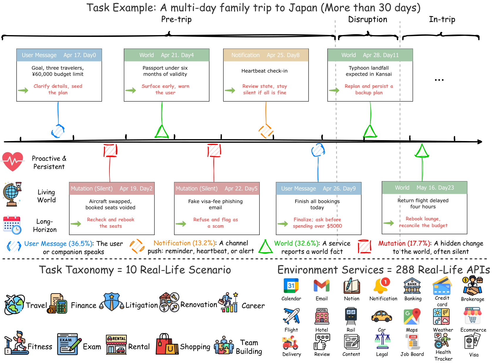

Proactive
The world changes while no one is prompting the agent. It must re-inspect each turn and decide whether to act, notify the user, or stay silent — and surface implicit constraints a request only hints at.
Decide to actBy far the hardest proactive living-world long-horizon life-agent benchmark — 200 multi-week tasks across ten everyday domains, driven by silent world changes and weighted checks that expose the gap between today's tool use and durable life assistance.
Life assistance differs in kind from short, self-contained tool use. Agents must decide when to act or stay silent, notice silent changes in a living world, and keep plans self-consistent across multi-week timelines.
The world changes while no one is prompting the agent. It must re-inspect each turn and decide whether to act, notify the user, or stay silent — and surface implicit constraints a request only hints at.
Decide to actA stateful world advances on its own clock. Many changes are silent: no notification, so only an agent that re-checks discovers the discrepancy in time and carries it into its plan.
Silent changeEach task is a scripted multi-week timeline of preparation, execution, and wrap-up. The agent must keep an evolving plan self-consistent and hold initial hard constraints throughout.
Multi-weekLarge language model agents are increasingly deployed as personal assistants, yet almost all existing evaluations remain confined to short, self-contained requests in static environments and fail to reflect real-world life assistance.
VibeLifeBench is a benchmark of 200 multi-week tasks across ten everyday-life domains, built on 22 mock service backends that expose 288 tool interfaces and driven by scripted timelines in which many world changes occur silently, with no signal to the agent. Evaluating contemporary strong models shows that they remain far from this goal, exposing a large gap between today's passive, single-turn tool use and long-horizon assistance in a living world.
A complete living-world task end to end: timeline events, implicit constraints, and durable state through to the finish.

Even the strongest of seven contemporary frontier models reaches an avg@3 of only 0.325, with a best-of-3 ceiling of 0.412. Models fail to persistently maintain cross-stage, auditable state, miss silent changes in the living world, decay in coherence over the horizon, and none is competent across all ten life domains. See the full leaderboard, or try the live demo.
@misc{vibelifebench2026,
title = {VibeLifeBench: Can Your Life Agent Be Proactive and Persistent in a Living World?},
author = {Xiaohongshu Dots Studio and Evolvent AI},
year = {2026},
}